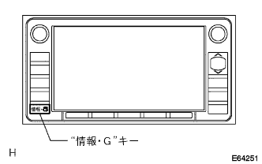
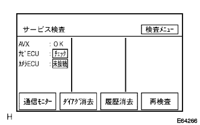
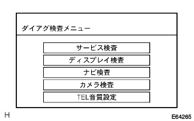
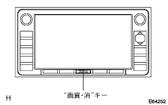
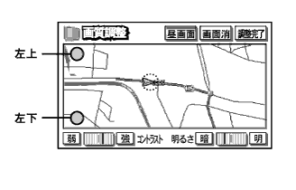

起動方法1
車両停止状態にする。
IGスイッチをACC、ONまたはエンジンを始動する。
ナビゲーションレシーバASSYの“情報·G”キーを押しながら、ヘッドランプディマスイッチをOFF→TAIL→OFF→TAIL→OFF→TAIL→OFFと操作する。
ダイアグノーシスが起動すると、“サービス検査”画面が表示され、サービス検査が実施される。
“検査メニュー”を選択し、ダイアグ検査メニュー画面を表示させる。
ダイアグ検査メニュー画面表示内容 表示 内容 サービス検査 システム検査+ダイアグメモリ収集を行い、双方の結果から、各接続機器の現在·過去の検査結果を表示する ディスプレイ検査 ディスプレイ部分の固有の検査を行う画面を表示する ナビ検査 ナビECU部分の固有の検査を行う画面を表示する カメラ検査 バックガイドモニターシステムの調整を行う画面を表示する(バックガイドモニターシステム装着車) TEL音質設定 ハンズフリー(販売店装着オプション)の音質設定を行う画面を表示する(ハンズフリーキット装着車) - □ 参 考 □
- バックガイドモニターシステムの調整を行う場合は、エンジンを始動してから、ダイアグノーシスを起動する。(要領は
 参照)
参照)
|  |
|  |
|  |
起動方法2
車両停止状態にする。
IGスイッチをACC、ONまたはエンジンを始動する。
TV以外の画面で、ナビゲーションレシーバASSYの“画質·消”キーを押し、画質調整画面を表示させる。
画質調整画面の左上と左下の部分を、左上→左下→左上→左下→左上→左下のように、ゆっくりとタッチ操作する。
- □ 参 考 □
- ディスプレイの角ではなく、画質調整画面の四隅の内をタッチすること。
ダイアグノーシスが起動すると、“サービス検査”画面が表示され、サービス検査が実施される。
“検査メニュー”を選択し、ダイアグ検査メニュー画面を表示させる。
ダイアグ検査メニュー画面表示内容 表示 内容 サービス検査 システム検査+ダイアグメモリ収集を行い、双方の結果から、各接続機器の現在·過去の検査結果を表示する ディスプレイ検査 ディスプレイ部分の固有の検査を行う画面を表示する ナビ検査 ナビECU部分の固有の検査を行う画面を表示する カメラ検査 バックガイドモニターシステムの調整を行う画面を表示する(バックガイドモニターシステム装着車) TEL音質設定 ハンズフリー(販売店装着オプション)の音質設定を行う画面を表示する(ハンズフリーキット装着車) - □ 参 考 □
- バックガイドモニターシステムの調整を行う場合は、エンジンを始動してから、ダイアグノーシスを起動する。(要領は参照)
|  |
|  |
解除方法
解除方法は、IGスイッチをOFFにする。または“画質·消”キーを3秒以上押す。